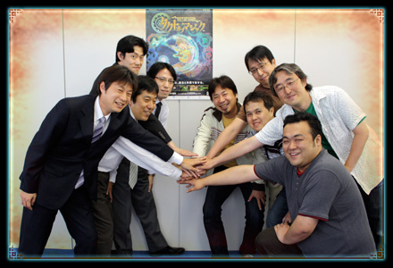

| ―― | 読者の皆さんに向けて、最後にメッセージをお願いします。 |
| 伊豆野： | 長い開発期間で紆余曲折はありましたが、世界観や操作方法など、Wiiのゲームとして遊んでもらいやすいものになっていると思います。お互い老舗のゲーム会社ということで、力を結集して作り上げた自信作になっているので、ぜひプレイしていただきたいです。 |
| 吉良： | RTSというジャンルを紹介するという目標は、上手くクリアできたと思っています。１つのバトルは10分程度でプレイできますので、なかなかゲームに時間を割けない方もぜひお試しください。 |
| 芳賀： | ストーリーを追いながら自然に操作が身に付くように工夫しているので、"ちょっと難しそうだな"と思われた方にも安心して遊んでいただける内容になっていると思います。自分自身がどれだけ魔法使いとして成長するかがゲームの攻略に繋がっていくので、一人でも多くの方に魔法使い気分を味わっていただきたいです。 |
| 大澤： | シナリオの面では、分岐する光と闇のシナリオを両方やってもらえたら嬉しいです。実社会と同じで、どちらかが正しくてもう一方が悪いというものではなく、「正解などない」というテーマを持たせました。光と闇の両方をクリアしていただいて、ふたつの面から『タクトオブマジック』の世界を見てもらえれば嬉しいです。 |
| 石川： | 私にとって過去最大の曲数と効果音を作りました。最初から最後まで音量を大きくして、じっくりBGMを聴きながらプレイしていただきたいです。 |
| 中園： | 今回は、RTSという今までにないユーザーインターフェイスを突き詰めたはじめてのゲームでした。実際にプレイして楽しんでもらえる形になっていると思いますので、気楽に遊んでもらいたいですね。 |
| 瀬口： | 今回は参加したプログラマーの人数が多く、上からの指示はもちろん、私からも注文を出して、じっくりと作り変えていきました。かなりの方にストレスなく遊んでもらえる仕組みができたと思うので、小さいお子様がいる方でも家族で遊んでもらえたら嬉しいです。 |
| 木村： | 自分が実際に魔法を出しているような感覚を体感できるゲームになっていると思います。Wiiリモコンを活かした直感的な操作でRTSの敷居を下げるという目標も達成できたと思っているので、そこを体感していただきたいですね。 |
| 井上： | 奇をてらったようなゲームに見えてしまっているかも知れませんけど、Wiiリモコンの便利さを引き出しながら臨場感を盛り上げられるよう注力してきたので、たくさんの方に手軽に遊んでもらいたいです。上達していく喜びや戸惑いも含めて、緊張感を持って楽しく遊べるような設計になっていますので、皆さんの心に残るゲームのひとつになってほしいと思っています。ぜひ感想を聞かせてください。 |
| ―― | どうもありがとうございました。 |
